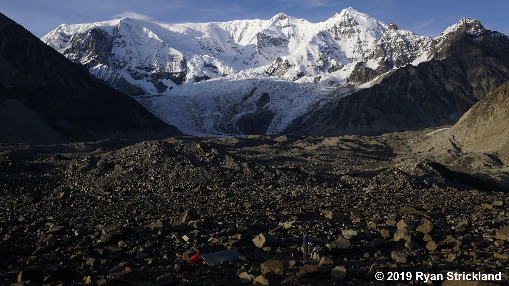

About Me
I am a quantitative glaciologist and geoscientist investigating feedbacks between glaciation, climate, and landscape evolution. My research combines modelling, remote sensing, and fieldwork to build process-based understandings of Earth's ice sheets and mountain glaciers.
My research currently targets West Antarctica. My work contributes to two UK NERC-funded projects: the International Thwaites Glacier Collaboration (ITGC) TIME Project and the Impact of Deep Subglacial Groundwater on Ice Stream Flow in West Antarctica. I completed a PhD in Geoscience in 2024, specializing in modeling the surface evolution of debris-covered glaciers in High Mountain Asia. Before entering academia, I taught mathematics and physics at an international school in California for six years.
I am also the writer, host, and producer of the Ways of Ice podcast, supported by the Scottish Alliance for Geoscience, Environment, and Society. Through narrative storytelling and conceptual models, the series explores glaciers as dynamic systems that shape landscapes, climate, and human understanding across deep time.
I am committed to open science and education, ensuring that all publications, modeling code, and datasets are publicly archived to support transparency, reproducible science, and accessible science education.

Current Research
Glacier and Ice Stream Bifurcation
 Learn more →
Learn more →
Ice Flow Over High-Relief Bed Topography
 Learn more →
Learn more →
Antarctic Subglacial Groundwater
 Learn more →
Learn more →
Science Communication
🎙️ Ways of Ice Podcast
Ways of Ice explores glaciers as dynamic systems that shape landscapes, climate, and human understanding across deep time.
Written, produced, and hosted by Ryan M. Strickland. The series bridges technical glaciology and public-facing science through narrative storytelling, scientific modelling, and the history of ideas.
Episodes explore Antarctic ice dynamics, mountain glaciers, erosion, geometry, climate feedbacks, and the evolving ways humans have understood ice and planetary change.
Explore Episodes & Resources →